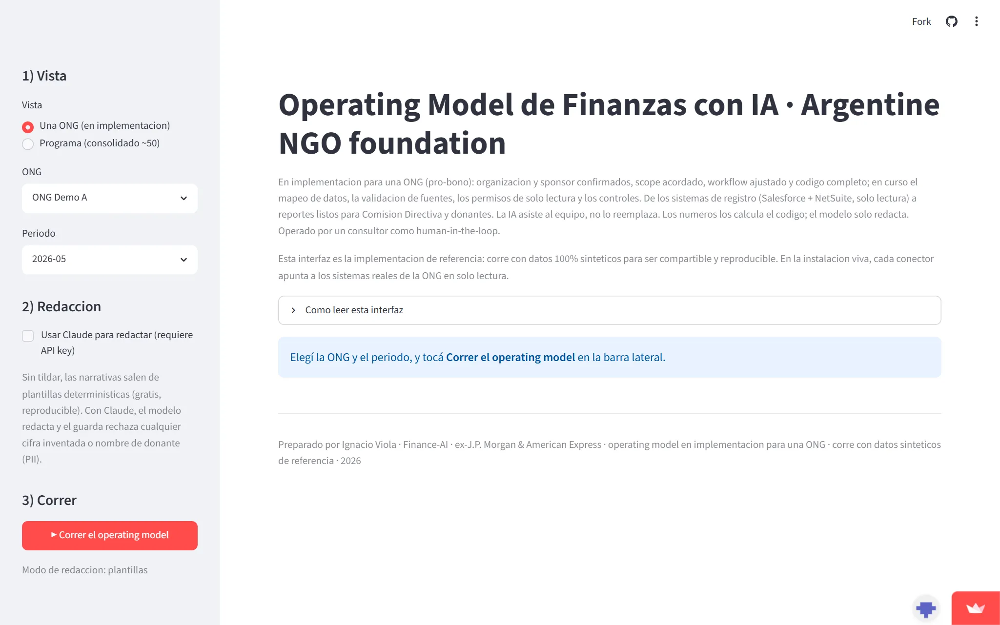

Finance-AI for an NGO · Pro-bonoFinance-AI para una ONG · Pro-bono
NGO Finance-AI modelModelo Finance-AI para ONG
A read-only Finance-AI layer over Salesforce and NetSuite for an Argentine NGO: it reconciles donor records against the general ledger, supports month-end close, cash forecasting and board reporting, with PII kept segregated and two human sign-offs before anything is published. Una capa Finance-AI read-only sobre Salesforce y NetSuite para una ONG argentina: concilia registros de donantes contra el libro mayor, soporta cierre de mes, forecast de caja y reporting al board, con la PII segregada y dos firmas humanas antes de publicar nada.

The problemEl problema
Argentine NGOs rarely have integrated financial workflows connecting fundraising and accounting. Manual reconciliation between donor records and GL entries is slow and risky, and it can block the monthly close and the reporting that boards and donors depend on.Las ONG argentinas rara vez tienen flujos financieros integrados entre recaudación y contabilidad. La conciliación manual entre registros de donantes y asientos del mayor es lenta y riesgosa, y puede bloquear el cierre mensual y el reporting del que dependen el board y los donantes.
The approachEl enfoque
An agentic workflow across five stages, data diagnostics, monthly close, cash forecasting, executive reporting and dashboards, with a strict split: code computes the numbers; the model only writes the narrative.Un flujo agéntico en cinco etapas, diagnóstico de datos, cierre mensual, forecast de caja, reporting ejecutivo y dashboards, con una división estricta: el código calcula los números; el modelo solo redacta.
- Read-only connectors bridge two disconnected systems: Salesforce (fundraising / donors) and NetSuite (GL accounting).Conectores read-only unen dos sistemas desconectados: Salesforce (recaudación / donantes) y NetSuite (contabilidad del mayor).
- Cross-system reconciliation matches donation recognition in Salesforce against posted GL income in NetSuite; mismatches fail-closed and block publication until resolved.Conciliación cross-system matchea el reconocimiento de donaciones en Salesforce contra el ingreso posteado en NetSuite; las diferencias hacen fail-closed y bloquean la publicación hasta resolverse.
- PII segregation, donor personal data lives only in the Salesforce connector and never enters shared state; the LLM layer guards against invented figures or names.Segregación de PII, los datos personales de donantes viven solo en el conector de Salesforce y nunca entran al estado compartido; la capa LLM bloquea cifras o nombres inventados.
- Two-level sign-off, per-stage approval plus a final publication gate before stakeholder delivery.Sign-off de dos niveles, aprobación por etapa más una compuerta final de publicación antes de la entrega.
Status & scaleEstado y escala
First live deployment underway, the same pattern is designed to scale to more organizations without duplicating code.Primer despliegue en marcha, el mismo patrón está diseñado para escalar a más organizaciones sin duplicar código.